Variant B, routing trial 5
Not a finished route: 122 signal connections and 82 plane connections are open, with 49 DRC errors the route added. The RP2350's regulator copper is unfinished, and the exposed pads have no solder paste yet. Interactive viewer.

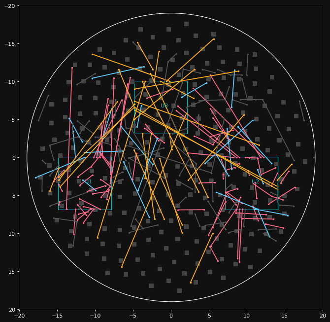

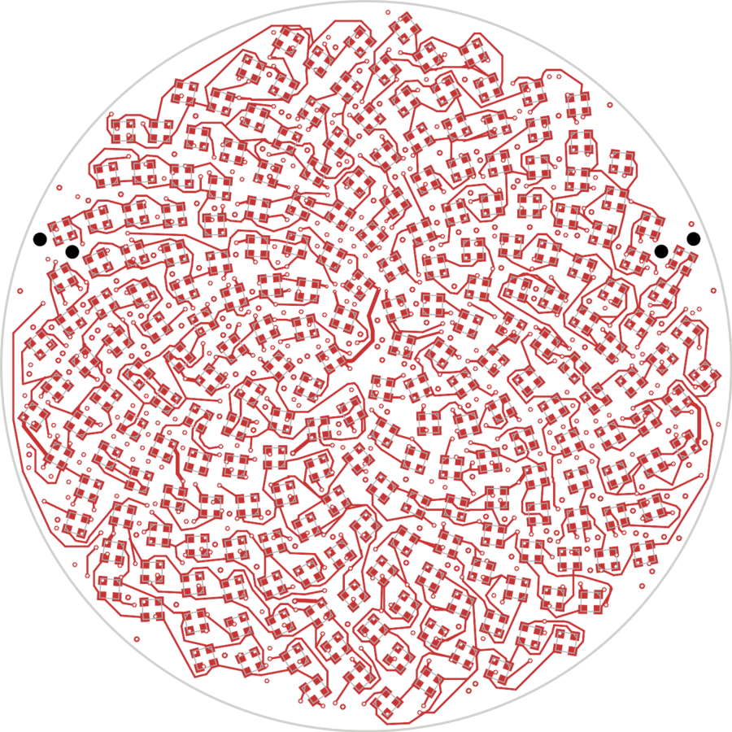

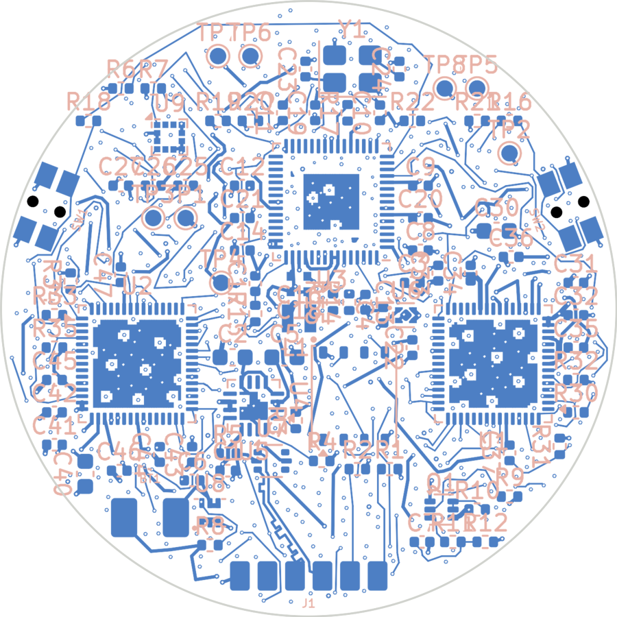

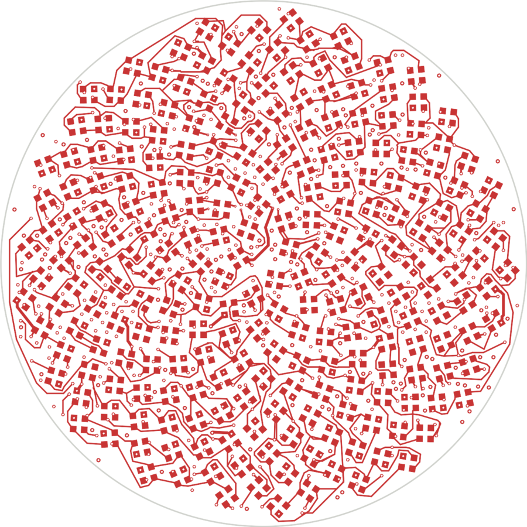

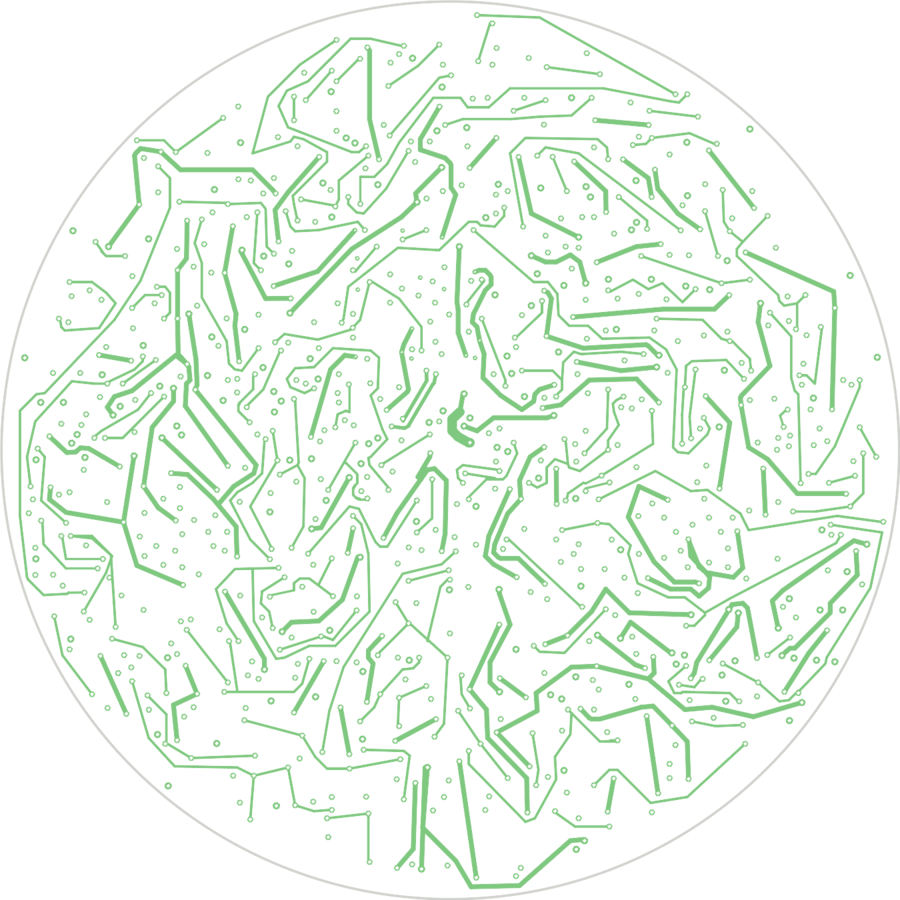

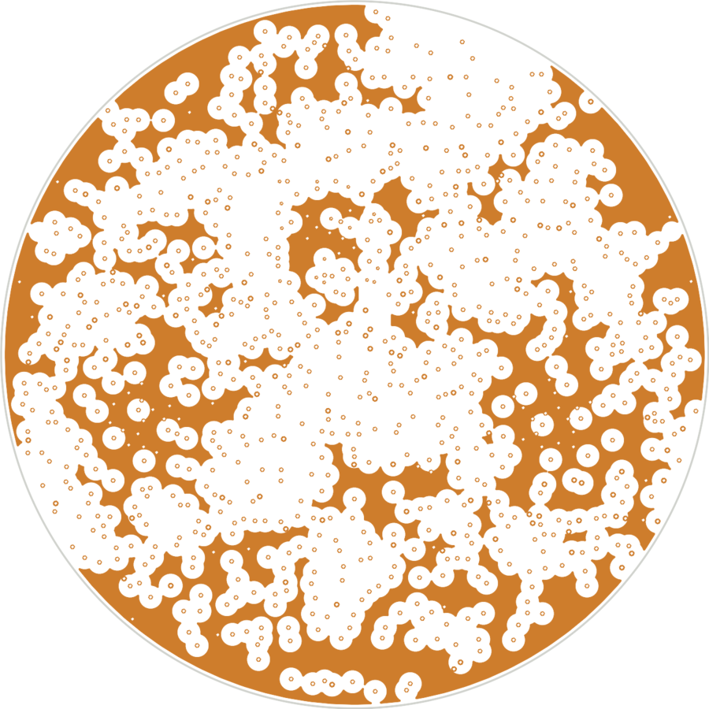

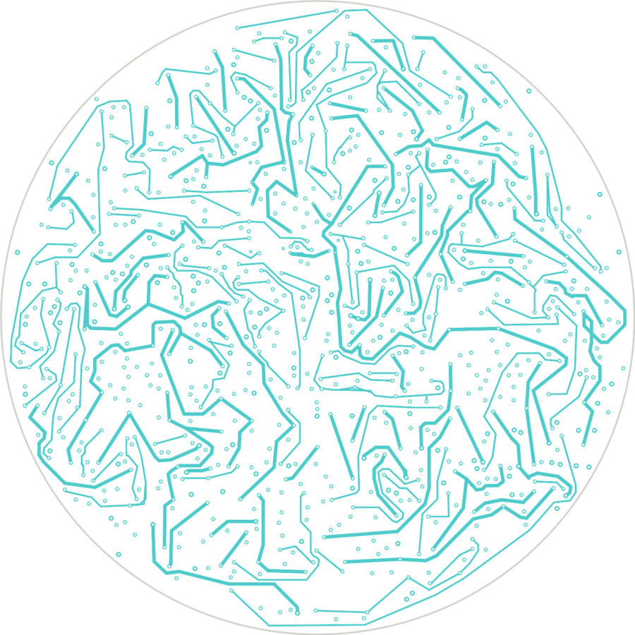

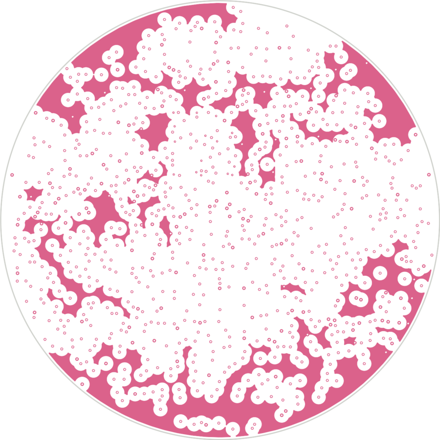

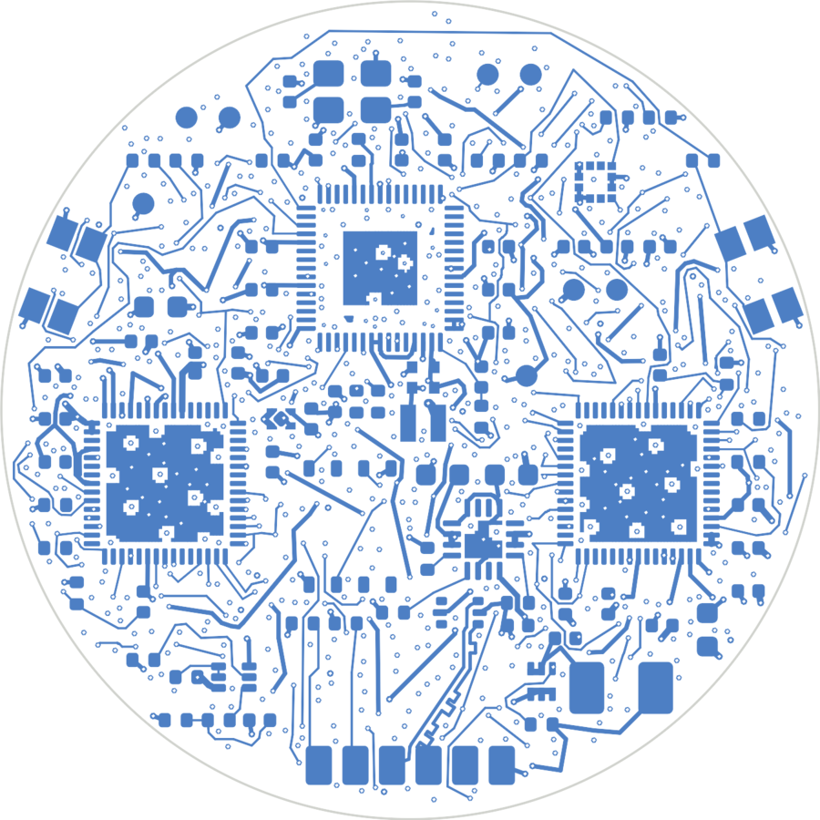

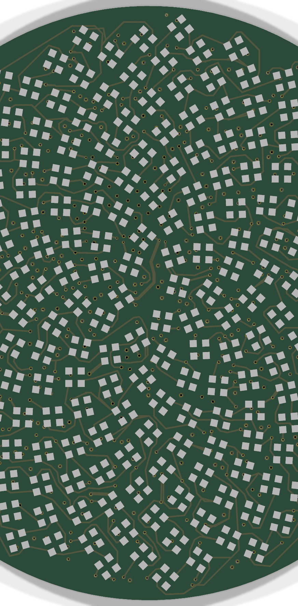

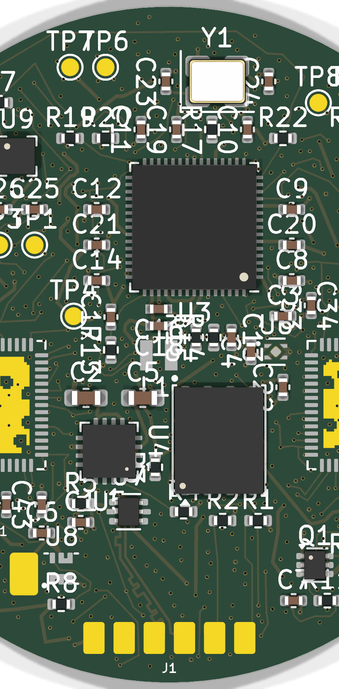

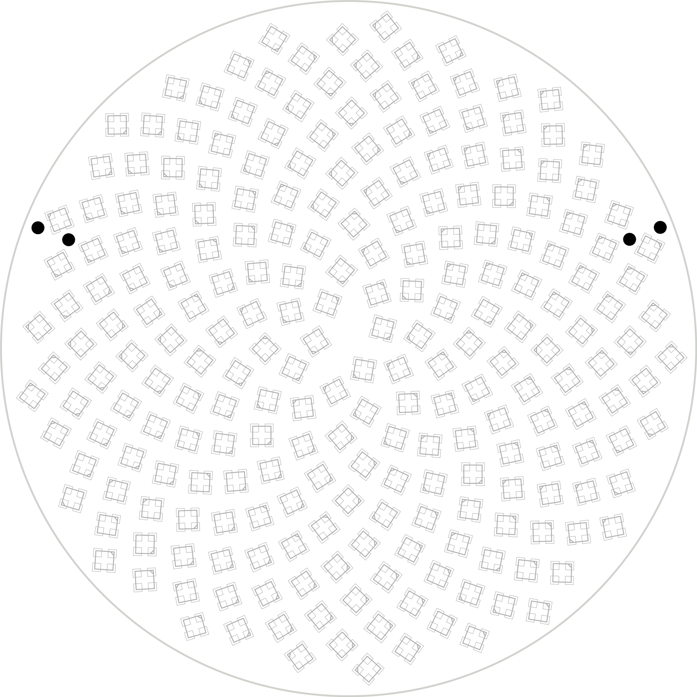